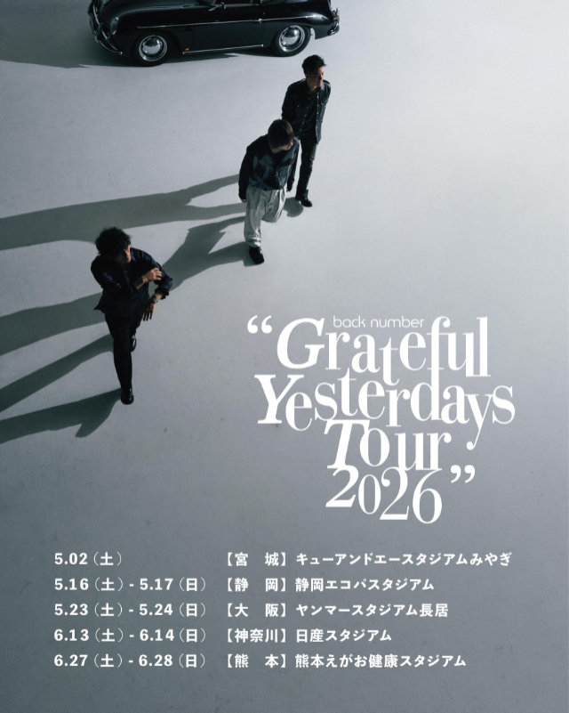
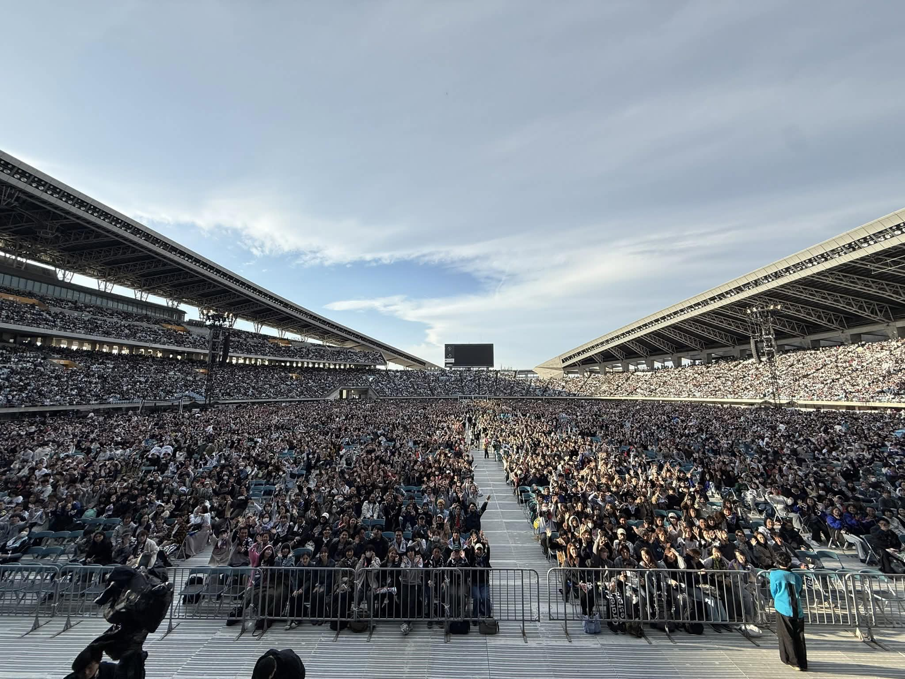
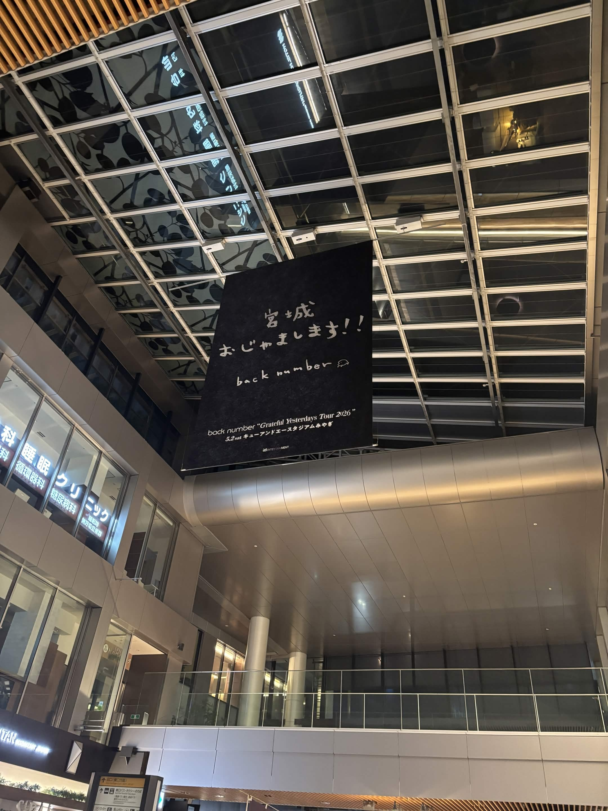
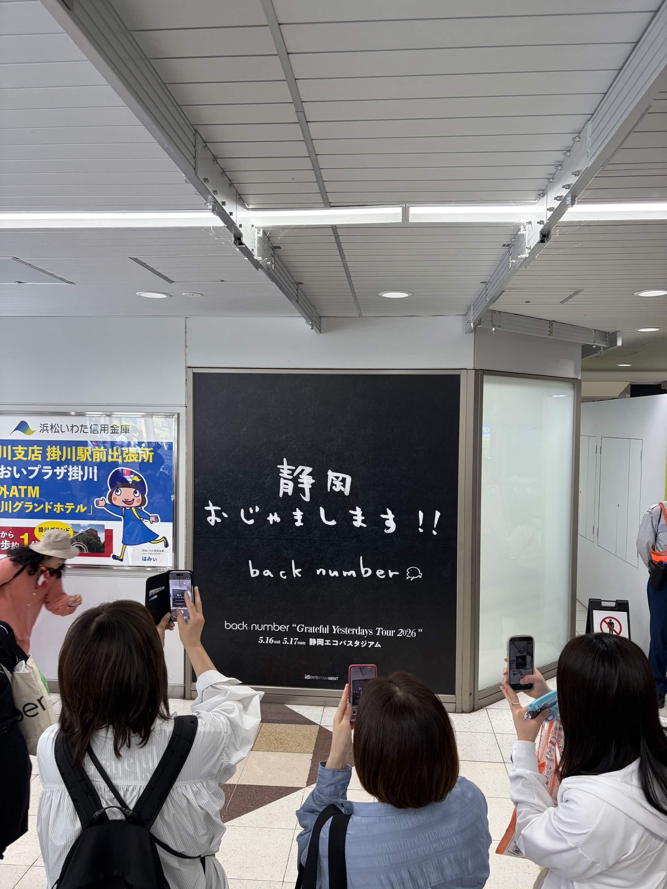

音楽を聴くこと
法学部の藤本聖那です。
音楽を聴くのが好きで、back numberというアーティストが好きです。
最近、そのback numberのライブがあり、宮城と静岡の2会場に参加してきました。
このページではそのライブについて話します。
Grateful yesterdays tour 2026

今回のライブは、back number史上最大規模となる初の5大スタジアムツアーです。
実際に参加して、ライブが始まる前からスタジアム周りが人であふれており、会場に入ってからもスタジアムの大きさと人の多さに圧倒されました。

この写真はback numberのベースを担当している小島和也さんのSNSに投稿された写真で、宮城公演の際のものです。
会場内の撮影は禁止となっているので、自ら撮影した会場内の写真はないのですが、この写真からでも自分と一緒に行った友人の姿も見えるほど近い席での観覧となりました。
宮城公演はツアー初日であったので、運営に問題も多かったものの、どのようなセットリストになっているのか、どのような演出になっているのかというわくわく感を抱きながら、いざ始まればあっという間の宮城公演でした。


静岡公演では、運営の問題も改善され、非常にスムーズに公演前後を過ごすことができました。
宮城公演のときとは違い、アリーナ席ではなく、スタンド席だったのですが、よりライブの演出、会場全体の雰囲気を楽しむことができました。
皆さんも是非行ってみてください。
back number Grateful yesterdays tour 2026 HP